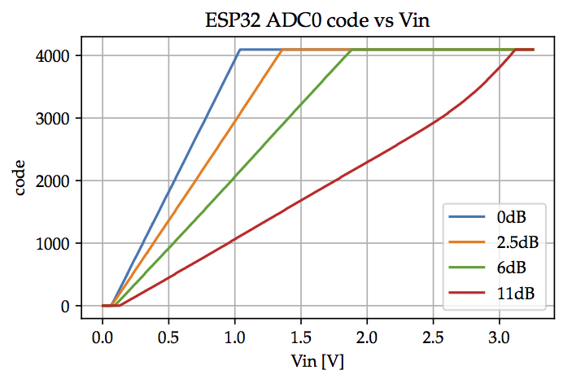

MicroPython Code¶
Let’s first convert the analog output from the load cell to a digital representation.
The figure below shows the relationship between analog and digital values of the ESP32 for several ADC gain settings. Since our signal is centered around \(V_\textrm{ref}\approx 1.65V\) we use the 11dB attenuation setting.
You can also try with less attenuation, possibly lowering \(V_\textrm{ref}\). Check the minimum input voltage in the INA126 datasheet.

At the beginning of each notebook, we need to set up the path and connect to the microcontroller:
%connect balance
Connected to balance @ serial:///dev/ttyUSB0
Now we are ready to setup and read the ADC. The code below is adapted from the example in the MicroPython documentation.
from machine import ADC, Pin
import time
# configure ADC3 (output of the INA126)
out = ADC(Pin(39))
out.atten(ADC.ATTN_11DB)
# configure ADC6 (Vref)
ref = ADC(Pin(34))
ref.atten(ADC.ATTN_11DB)
# read the ADCs in a loop and display the result
# _ just means that we don't care for the loop counter
for _ in range(10):
vout = out.read()
vref = ref.read()
print("out = {:4} ref = {:4} delta = {:4}".format(vout, vref, vout-vref))
time.sleep(1)
out = 1810 ref = 1717 delta = 93
out = 1787 ref = 1723 delta = 64
out = 2153 ref = 1712 delta = 441
out = 2084 ref = 1736 delta = 348
out = 2114 ref = 1726 delta = 388
out = 2101 ref = 1703 delta = 398
out = 2113 ref = 1729 delta = 384
out = 1772 ref = 1695 delta = 77
out = 1823 ref = 1714 delta = 109
out = 1773 ref = 1725 delta = 48
Playing around with the scale, you can see that the output (delta) changes when you put a weight (e.g. your finger) on the scale. But even with no weight applied, the delta is not zero. This error is called “offset” and comes from inacurracies in the load cell, the INA216, and the ADC.
Further, values reported by the ADC change even for constant weight. This “noise” is the result of electrical interference and the ADC.
Let’s try averaging a few samples to see if we can reduce the noise:
for N in [1, 10, 100]:
for _ in range(5):
vout = 0
vref = 0
for _ in range(N):
vout += out.read()
vref += ref.read()
vout /= N
vref /= N
print("N = {:3} out = {:4.0f} ref = {:4.0f} delta = {:4.0f}".format(
N, vout, vref, vout-vref-55))
time.sleep(1)
print()
N = 1 out = 1780 ref = 1718 delta = 7
N = 1 out = 1726 ref = 1725 delta = -54
N = 1 out = 1775 ref = 1719 delta = 1
N = 1 out = 1777 ref = 1734 delta = -12
N = 1 out = 1759 ref = 1726 delta = -22
N = 10 out = 1780 ref = 1717 delta = 8
N = 10 out = 1779 ref = 1723 delta = 0
N = 10 out = 1776 ref = 1721 delta = 0
N = 10 out = 1777 ref = 1724 delta = -2
N = 10 out = 1777 ref = 1723 delta = -0
N = 100 out = 1776 ref = 1722 delta = -1
N = 100 out = 1776 ref = 1722 delta = -0
N = 100 out = 1774 ref = 1722 delta = -3
N = 100 out = 1777 ref = 1721 delta = 0
N = 100 out = 1777 ref = 1722 delta = 0
In these tests I did not apply any force to the scale.
Averaging definitely helps. In my trials it reduced the noise (variations of delta) from more than 50 without averaging (N=1) to less than 5 (N=100), a ten-fold improvement!
Let’s update the code again, this time first measuring the offset and then subtracting it from subsequent measurements. We also create a function for reading the ADC and averaging its outputs. In read_adc we average the difference, a small optimization to keep the sum smaller, even for large N.
def read_adc(out, ref, N=100):
sum = 0
for _ in range(N):
sum += out.read() - ref.read()
return sum/N
# measure the offset
offset = read_adc(out, ref)
# weigh ...
for _ in range(10):
weight = read_adc(out, ref) - offset
print("weight = {:4.0f}".format(weight))
time.sleep(1)
weight = -4
weight = -0
weight = 0
weight = 332
weight = 334
weight = 332
weight = 0
weight = -2
weight = -1
weight = -3
Not perfect but somewhat usable.
Let’s now calibrate the scale so it’s output is in grams. For this we need a reference with known weight. If you do not have calibrated weights just get something with a weight close to the full scale of your load cell, get another scale to determine its weight, and then put it on your scale.
offset = read_adc(out, ref)
for _ in range(5):
print("weight = {:4.0f}".format(read_adc(out, ref) - offset))
time.sleep(2)
weight = 3
weight = 839
weight = 831
weight = 839
weight = 839
My reference weighs 500grams. The output of the scale is about 840 (averaged), so let’s redo the test with the output scaled by 500/840.
offset = read_adc(out, ref)
for _ in range(5):
weight = read_adc(out, ref) - offset
weight_scaled = weight * 500 / 840
print("weight = {:4.0f} grams".format(weight_scaled))
time.sleep(2)
weight = -0 grams
weight = 0 grams
weight = -501 grams
weight = -500 grams
weight = -501 grams
Ups, I forgot to remove the weight before I started the test. Now it comes out negative: I removed 500grams.
As a final step, let’s wrap up the code in a class.
from machine import Pin, ADC
import time
class Scale:
def __init__(self, out_pin=39, ref_pin=34, scale=500/840):
self._out = ADC(Pin(out_pin))
self._out.atten(ADC.ATTN_11DB)
self._ref = ADC(Pin(ref_pin))
self._ref.atten(ADC.ATTN_11DB)
self._scale = scale
self._offset = self._read_adc()
def _read_adc(self, N=100):
sum = 0
out = self._out
ref = self._ref
for _ in range(N):
sum += out.read() - ref.read()
return sum/N
def measure(self):
return (self._read_adc()-self._offset) * self._scale
def tare(self, button):
print("tare")
self._offset = self._read_adc()
scale = Scale()
last_weight = 1000
start = time.ticks_ms()
while time.ticks_diff(time.ticks_ms(), start) < 5000:
weight = scale.measure()
# print only big changes
if abs(weight - last_weight) > 10:
print("{:5.0f} gram".format(weight))
last_weight = weight
3 gram
43 gram
312 gram
335 gram
456 gram
262 gram
281 gram
305 gram
294 gram
338 gram
475 gram
534 gram
498 gram
478 gram
529 gram
493 gram
520 gram
501 gram
490 gram
509 gram
491 gram
503 gram
515 gram
501 gram
487 gram
442 gram
393 gram
250 gram
145 gram
106 gram
64 gram
-9 gram
2 gram
We need a display; just printing the output isn’t user friendly.
But the Scale class looks ok, let’s save it.
%%writefile code/lib/scale.py
from machine import Pin, ADC
import time
class Scale:
def __init__(self, out_pin=39, ref_pin=34, scale=500/840):
self._out = ADC(Pin(out_pin))
self._out.atten(ADC.ATTN_11DB)
self._ref = ADC(Pin(ref_pin))
self._ref.atten(ADC.ATTN_11DB)
self._scale = scale
self._offset = self._read_adc()
def _read_adc(self, N=100):
sum = 0
out = self._out
ref = self._ref
for _ in range(N):
sum += out.read() - ref.read()
return sum/N
def measure(self):
return (self._read_adc()-self._offset) * self._scale
def tare(self, button):
print("tare")
self._offset = self._read_adc()
Overwriting code/lib/scale.py